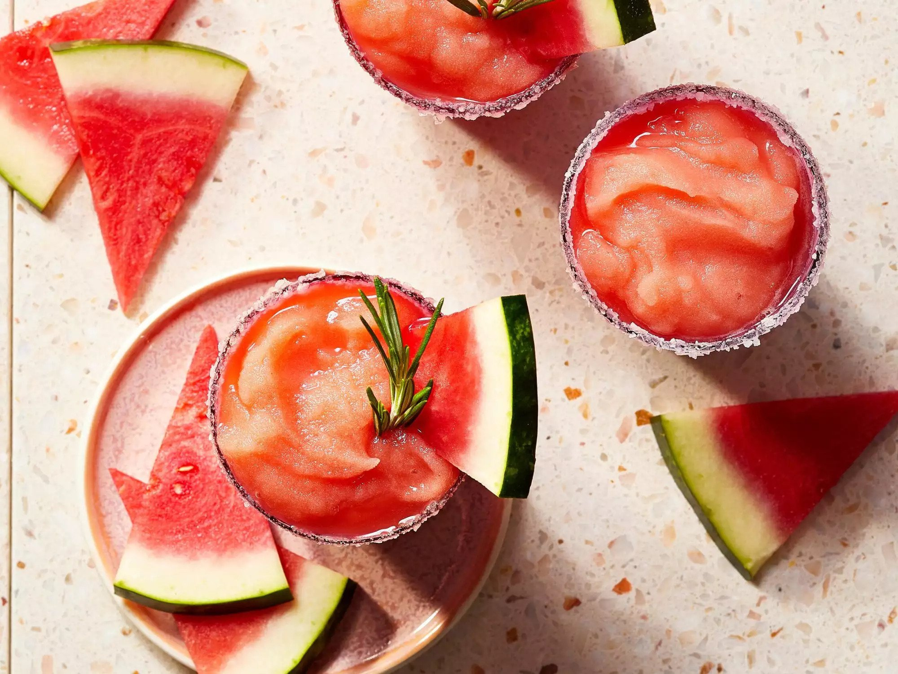

Frozen Watermelon Rosemary Margaritas

Description
These pleasantly herbaceous margaritas are naturally sweet and instantly refreshing.
Ingredients
- 1 cup water
- 1/3 cup white sugar
- 1 1/2 teaspoons chopped fresh rosemary
- 6 cups cubed seeded watermelon
- 1 cup lemon juice
- 1 tablespoon kosher salt
- 1 tablespoon white sugar
- 8 fluid ounces reposado tequila
- Rosemary sprigs for serving
- Watermelon wedges for serving
Steps
- Bring 1 cup water and 1/3 cup sugar to a boil in a small saucepan, stirring occasionally to dissolve sugar. Stir in chopped rosemary. Let steep for 1 hour.
- Strain rosemary syrup into a blender. Add watermelon and lemon juice. Puree until smooth, about 30 seconds. Strain lemonade mixture, then freeze in ice cube trays until solid, 8 hours or overnight.
- Mix together salt and remaining 1 tablespoon sugar in a small shallow dish. Lightly dampen rims of 4 (12-ounce) glasses with a wet paper towel. Roll glass rims in salt-sugar mixture until coated.
- Working in batches, blend half of the frozen watermelon-lemonade cubes and 4 ounces tequila in a blender or food processor until slushy, adding 1 to 2 tablespoons of water as needed to help blend mixture. Pour into prepared glasses. Repeat with remaining watermelon-lemonade cubes and remaining tequila. Garnish with rosemary sprigs and watermelon wedges.